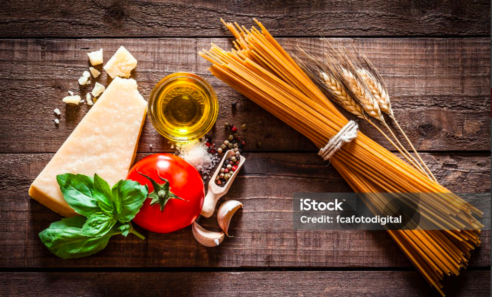

Recipe Information
Preparation time: 15 minutes
Cooking time: 20 minutes
Servings: 4 people
Difficulty: Beginner
Ingredients

- 200g pasta
- 2 tablespoons olive oil
- 1 small onion, finely chopped
- 2 cloves garlic, minced
- 200ml heavy cream
- 100g grated Parmesan cheese
- 2 fresh tomatoes, chopped
- Salt and pepper to taste
- Fresh parsley for garnish
Instructions
- Boil pasta in salted water until al dente. Drain and set aside.
- Heat olive oil in a pan over medium heat. Add onion and garlic, sauté until soft.
- Add chopped fresh tomatoes and cook until softened.
- Pour in the heavy cream and bring to a gentle simmer.
- Stir in Parmesan cheese until melted and sauce thickens.
- Add pasta to the sauce, toss well, and season with salt and pepper.
- Serve hot, garnished with fresh parsley.
Tips
For extra flavor, add grilled chicken or sautéed mushrooms. You can also replace Parmesan with cheddar for a sharper taste.